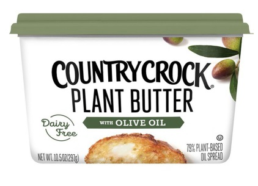
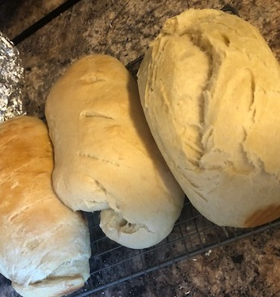

What did I eat yesterday and why would you care?
You probably don't. I have a severe dairy allergy if that makes you more interested.
Bagel and smoothie
Ingredients
Bagel, non-dairy butter spread, Naked Strawberry and Banana smoothie
Preperation Notes
The trick to making a crisp 'buttered' bagel in the toaster is to butter your bagel before you put it in the toaster
Leftover Chicken Lo-mein
Ingredients
leftover chinese delivery from the night before, because we all know that I ordered too much
Preperation Notes
Don't microwave styrofoam
Chicken Taco Salad
Ingredients
crock-pot chicken, chips, lettuce, salsa, corn pico
Preperation Notes
slow cook your chicken on low for 4-5 hours with 1/2 c. chicken stock and 1T. taco seasoning for each chicken breast.
remove your whole chicken breasts from broth once they're done cooking and use your tongs and a fork to shred it.
Turkey Sandwich and Oreos
Ingredients
Sliced white bread, deli turkey, mayo, origional lays chips, oreos
Preperation Notes
Add chips to your sandwich for a more pleasant eating experience.
